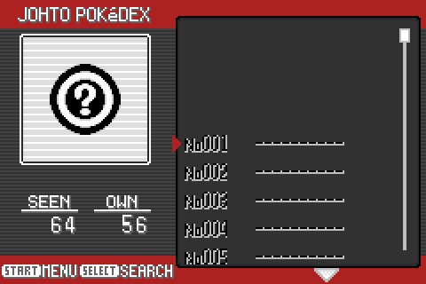
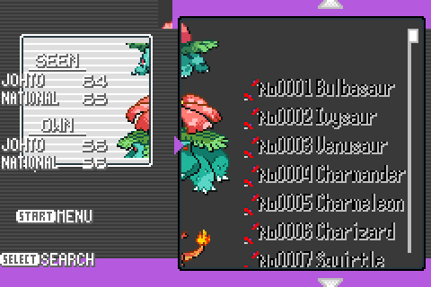
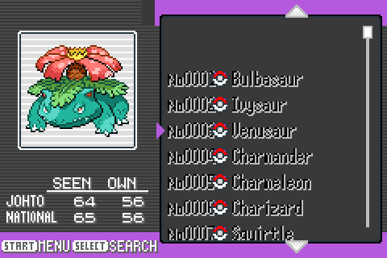
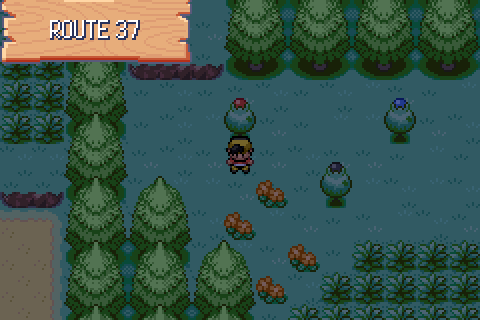
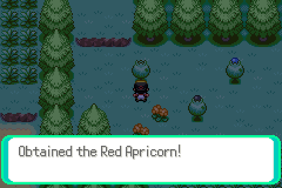

tools/playtest/scripts/d117.txtThe seventh human-testing round: two observations, everything else previously reported confirmed fixed. Captures are raw mGBA frames taken by tools/playtest/playtest.py. Full reasoning in docs/port/decisions.md, section D117. The round before is D115.
alignment on Pokédex?
The same split that produced D105, D106 and D114: CrystalDust’s art driven by Emerald’s code. CrystalDust’s list screen draws a framed picture box top-left with the seen/own counters in a panel beneath it; Emerald’s draws the mon in a tall, open left column with the counters floating beside it. The background is CrystalDust’s, every coordinate in src/pokedex.c was Emerald’s, and nothing landed where the frame expected it.
Six groups of coordinates were taken from sources/crystaldust/src/pokedex.c:
CreateMonListEntry. The old columns overhung the frame’s right edge.scrollingMonX 0x60→0x30 and y 0x50→0x38, putting it inside the picture box rather than across it and the list.SpriteCB_PokedexListMonSprite is narrowed from ±64 to ±24, which bounds the swing to gSineTable[24] * 76 / 256 = 31px and leaves only the centred mon showing — what CrystalDust draws.graphics/pokedex/caught_ball.png is CrystalDust’s 16×16 ball, but CreateCaughtBall blitted Emerald’s 8×16 rectangle, so each owned entry showed a 3px red sliver instead of a Poké Ball. The blit is now 16 wide (POKEDEX_PLUS_HGSS packs its columns 6px apart and keeps 8).sRotatingPokeBallSpriteTemplate sprites deleted — CrystalDust has no such sprites, and they are the red fragments at the left of every row in the before shot.
tools/playtest/scripts/d117.txt
tools/playtest/scripts/d117nat.txt
National mode needs more than the flag, so the script writes the save block directly:
setflag FLAG_SYS_NATIONAL_DEX setvar VAR_NATIONAL_DEX 0x302 pwrite 0x03005238 0x18 32 0x00DA0100
Not changed: CrystalDust replaces the whole scrolling mechanism with a single mosaic sprite (ReplaceMonSpriteAtPos) rather than a three-sprite carousel. That is behaviour, not alignment, and the bounded carousel above now reads the same on screen, so it is left as a separate decision rather than folded into this one.
when apricot has been taken, still appears on overworld (disappeared when I went in and out of building)
Picking removes the apricorn correctly in every configuration tested. The fruit is a metatile (METATILE_General_FruitTreeTop → _NoFruit) plus an OBJ_EVENT_GFX_APRICORN_* object event one tile above the trunk; SetFruitTreeMetatileTakenFromId swaps the metatile and RemoveFruitTreeObjectEvent takes the sprite off screen, because the object event is already spawned and nothing re-reads the template flags until the next map load — which is what “in and out of a building” would do.
Probed on Route 29, Route 30, Route 46 and Route 37. Route 46 initially looked like a reproduction; a control capture with the flag set before the map loaded produced a pixel-identical frame, and grid dumps showed the metatile going 2D32→2C32, so the pale shape left behind is the no-fruit canopy art, not an unremoved apricorn. The tester’s screenshot is Route 30 north of Mr Pokémon’s house, where the orange clusters are permanent scenery: an image diff of before and after picking there had exactly one delta, the 12×10px apricorn sprite.
Route 37 is the one configuration the earlier probes missed — three fruit trees on one map, which exercises the break-on-first-match in the bgEvent loop. It behaves:


tools/playtest/scripts/d118.txt: the red one is gone, the other two keep theirsTwo guesses were checked and ruled out: the OBJ_EVENT_GFX_APRICORN_RED…_BLK range in the removal guard is contiguous, so no colour escapes it; and a tree reached across a map connection has no object event to remove in the first place, only the amber metatile. Which tree and which route was it, and was the bag full at the time? With that the case is reproducible in one script.